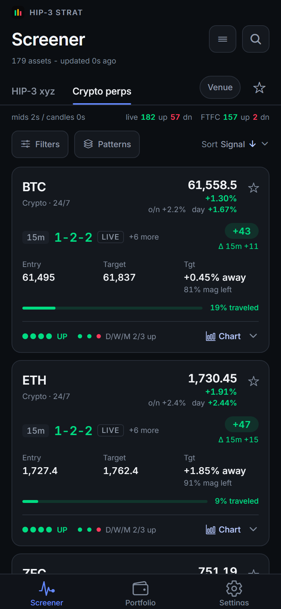
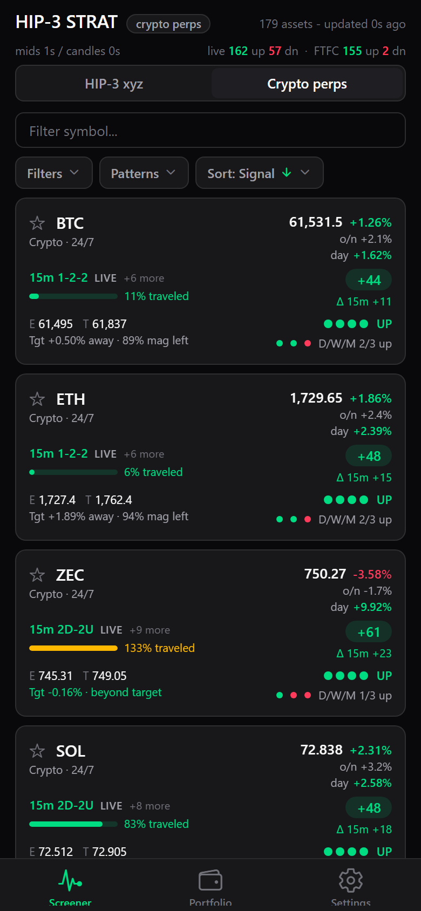
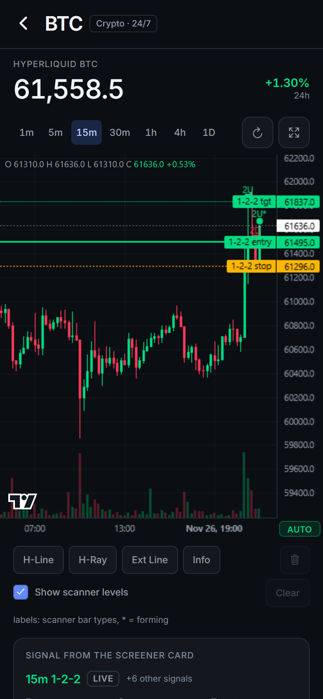

One scanner behind every screen you trade from.
An always-on scanner watches 260+ Hyperliquid markets and pushes sharp moves, volume spikes, price levels and setups to your phone and watch. A mobile app and a chart-first terminal read the same feed, show Hyperliquid and MyFundedPerps positions side by side, and put both venues on one order ticket.
A working prototype. I built it for my own trading and use it on a live MyFundedPerps challenge account.
- Markets scanned
- 260+ around the clock
- Interfaces on one feed
- 3 two apps, one terminal
- Automated tests
- 1,260 scanner, app, terminal
- Android releases
- 5 since July 2026




The same data, in two looks so far.
The apps never detect anything. Every signal, entry and target comes from the scanner's state feed, and the interface only draws it. So the look is free to change: the second version runs on the same feed and the same safety code with a different layout.
Both captures show the same BTC signal at the same moment.
A firm's own colours, type and layout would be a fourth box on the right. The scanner and the order checks do not change.
The second version, as it runs.
A funded account is lost on one move you did not see.
The daily loss limit and the drawdown limit apply whether or not I am at the desk, and the markets I trade, HIP-3 equity, index and commodity perps and the crypto majors, move at night and on weekends.
I wanted three things I could not get in one place: alerts that arrive every time, whether or not an app or a browser tab is open; a single screen that shows what I hold on every account; and a way to get out fast from a phone, with enough checks that a fat thumb cannot make things worse.
Scanner and alert feed
RunningA small server process that watches every HIP-3 market and the Hyperliquid crypto perps, re-checking prices every few seconds. It holds no trading key and places no order.
- Sharp moves. Fires when a market moves more than three times its own normal 15-minute range, with a floor of 0.75%.
- Volume spikes. Fires when 15-minute volume runs far above its average, with a minimum dollar size so thin markets do not spam.
- Price levels. Your own levels, alerted once per crossing direction.
- Setups. Daily, weekly and monthly reversal setups with entry, stop and target, and a second alert if the setup fails.
Every alert fires on a change, once, then stays quiet. Alerts go out as native Android push notifications, which a paired watch mirrors on the wrist, and can also go to ntfy, Discord or Telegram.
The scanner reads Hyperliquid prices. MyFundedPerps fills on its own routed venue, so a level can sit a small distance from the fill (about $40 on BTC in my test).
[SPIKE] NVDA -2.31% in 15m (4.2x its normal range)
[RVOL] SILVER 15m rvol 61 (>= 50)
[LEVEL] BTC crossed above 80,000
[LIVE] AMD D 2D-2U up
entry >526.99 stop 498.48 tgt 552.25
[INVAL] AMD D 2D-2UMobile app
Released, Android- Screener. Every market as a card: price, day change, the live signal with entry and target, and trend agreement across timeframes. Filter, sort, star.
- MyFundedPerps account. Open positions on a Read Only key. Closed trades become a Performance view and a Trades ledger.
- Close and reverse. A full close or a reverse of one position, behind a 1.2-second hold and a fingerprint, using a separate trade key scoped to one account.
- Hyperliquid. The same views for Hyperliquid wallets, across every perp dex.
Android only for now, installed as a signed APK. It is an Expo / React Native app, so iOS is a build target rather than a rewrite, and I can add it on request.
The second version adds a one-tap filter for the tickers MyFundedPerps lists, several MyFundedPerps accounts at once, a performance chart that marks the 00:00 New York daily reset, and tap-to-chart with drawings that persist. In testing on my phone; not in the repo yet.
One ticket for every account you trade.
PrototypeThe terminal is one chart, one order ticket and one risk header over several venues. Hyperliquid and MyFundedPerps are wired today. Options through a broker API are next. Each venue is an adapter, so adding one does not touch the chart, the ticket or the tables.
It is not a broker and holds nothing. Keys stay on my device, every order goes from the device straight to the venue's own API, and the venue keeps the account, the rules and the execution.

Desktop layout, demo mode.
The same order is a different request on every venue. The ticket takes one intent, each adapter turns it into what its venue accepts, and every answer comes back as one of five outcomes: confirmed, pending, partial, rejected or unknown.
| On the ticket | Hyperliquid | MyFundedPerps |
|---|---|---|
| Market order | No market type. A signed IoC limit priced at the slippage cap. | type: market with an expected_price. |
| Take profit / stop loss | Separate reduce-only trigger orders, placed once the entry has filled. | Attached to the entry order, or set on the position. |
| Moving a resting order | modify replaces it with a new order. | PATCH keeps the order's id; the venue floors the size to the market's step. |
| Post-only | Alo. | Not offered, so the ticket refuses it. |
| Leverage | A setting per market. | Sent with each order. |
| A lost answer | Looked up by cloid. The signed request also expires, so it cannot land late. | Looked up by client_order_id. |
| Auth | A signature from an API-wallet key. | A bearer key, matched to its host by prefix, with an Idempotency-Key on every write. |
The interface is terminal/src/lib/venue.ts. A third implementation, a mock venue, drives demo mode and the tests.
- Two venues on one order ticket: Hyperliquid and MyFundedPerps, switched with a tab.
- Market and limit orders, take profit and stop loss dragged on the chart, close 25 / 50 / 100%, Flat and Reverse.
- MFP daily room and MFP drawdown room always in the header: how much you can still lose today, and in total, before the account fails.
- One positions table and one watchlist across both venues; resting orders drawn on the chart.
- The same order checks sit in front of every adapter: sent once, never resent, a size cap, a slippage cap.
- Nothing is shown as done until a re-read of the venue shows it.
- For a prop firm this is a front end over the firm's own API. The firm keeps the accounts, the rules and the execution.
- It has placed and cancelled a live order on a MyFundedPerps account. Market orders, exits, closes and reverse are still on the live test list.
- It runs in a desktop browser on your own machine. The phone layout has not run on a phone yet.
Options are the next venue, and the reason the ticket is built on adapters. An option order is the same intent with an expiry, a strike and a right added, and a spread adds legs. Every broker takes that in its own shape, which is the translation the two perp adapters already do.
I want it on the same ticket because the trading day no longer ends. SPX, VIX and XSP options trade overnight, from 8:15 p.m. to 9:25 a.m. Eastern. Since October 2026 some single-stock and ETF options have a pre-market session from 7:30 a.m. Perpetuals never close, and prop firms now fund traders on them. Most traders I talk to do not know the overnight option sessions exist yet.
A trader can already be working an index option, a perp and a funded account in the same evening, on three screens with three tickets. I think whoever puts those on one ticket gets that trader's order flow, and a prop firm could offer it under its own name.
The market data for options is partly wired through a broker API (Schwab or tastytrade), and the rest goes live once my kids stop kicking my ass and I get an evening to finish it.
How it uses the MyFundedPerps API.
REST for every read and write, with the account stream as the signal for when to read.
| Guideline | What the code does |
|---|---|
| Test on a sandbox key first | Sandbox and live are separate hosts. A key is refused unless its prefix matches the host it is used on (fp_test_ for sandbox, fp_live_ for live). |
| Idempotency key on every order | Every write carries a fresh Idempotency-Key and client_order_id. It is sent once and never resent. If the answer is lost, the app looks the order up by its client_order_id instead of sending again. |
| Read-only access for watching | Two keys. A Read Only key does all the watching, including the account stream. The trade key is read only at the moment of a close or reverse, behind a fingerprint, and is tied to one account. |
| No keys in code, URLs, logs or commits | No key ships in the app. The user types their own and it is kept in Android's secure storage (the terminal's web build keeps it in the tab's memory only). A build check fails if a log line mentions a key or if the app calls any MyFundedPerps path outside its short allowed list. |
| Respect the account's rules | The trading policy is read before a reverse. If the account is blocked, reduce-only or restricted from opening exposure, the reverse is refused before anything is sent. |
| Do not make things worse | A close re-reads the position first and aborts if side or size changed. A reverse opens the other side only after the close reads filled and flat. If anything is uncertain it stops with the account flat. |
| Use the account stream, not polling | Built, not yet released The clients hold the account stream on the Read Only key, receive-only. A pushed event is a signal to take the normal REST reading again, so nothing unconfirmed is shown or acted on. Verified against the sandbox stream. |
| Back off on 429 / 503 | Built, not yet released Every GET is counted per key. Background reads stop below the limit and wait out Retry-After; the reads a close needs are always sent; an order lookup backs off instead of spinning, and still never resends. In tests the terminal's reads fell from 52 a minute to 17 with the stream down and about 7 with it live. |
Runs locally with no account and no key.
git clone https://github.com/sheehyct/hip3-strat cd hip3-strat # scanner: dashboard on http://localhost:8787 cd scanner && LOG_ONLY=1 node server.js # terminal, demo mode: http://localhost:8088/?mock=1 cd terminal && npm ci && npm run serve
The scanner talks only to Hyperliquid's public market data. The terminal's demo mode runs on a mock venue. The mobile app is cd mobile && npm install && npx expo start, pointed at a running scanner in Settings.
- Release the account stream to the phone and the terminal, after a test on a device.
- Account alerts to the watch. Push when daily room or drawdown room crosses a threshold you set, and when a position opens, closes or is stopped.
- Alerts scoped to MyFundedPerps tickers. One switch, so the feed only covers what you can trade on the account.
- Finish the terminal's live test list on a challenge account, then cut a first release.
- More venues behind the same ticket. Options through a broker API first, then further perpetual venues.
- A version for traders who do not use The Strat. Swap the Strat setups for ones more traders already use, such as breaks of the previous day's high and low, with moving averages on the chart.
- A themed build. Ship the second version's look, then make the theme a setting, so a firm or a trader can have their own.
An independent project, not affiliated with Hyperliquid or MyFundedPerps. Code: github.com/sheehyct/hip3-strat, MIT licence.